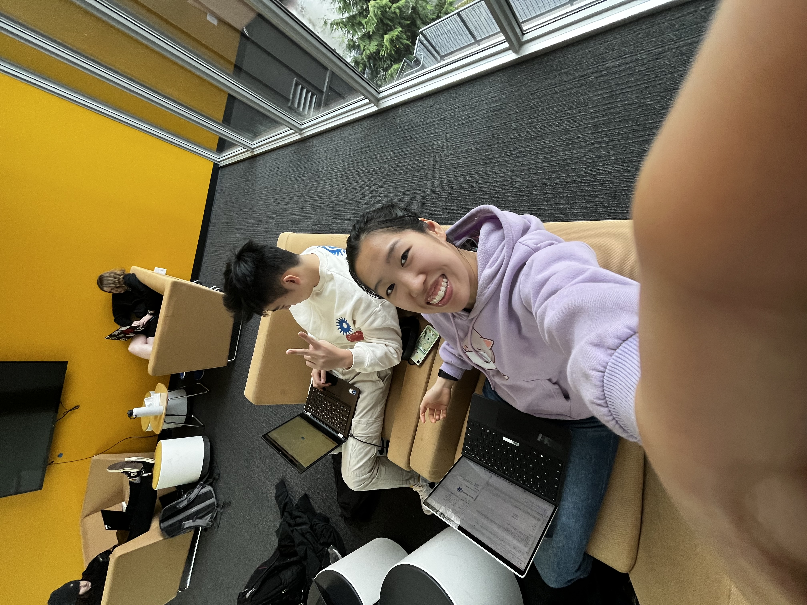

C period free, located in the open space of TALI second floor, is a common gathering place for seniors and others, where work is rarely done and we just have fun.
This is Elena Kong.
Elena Kong is currently a senior at EPS, and she is one of my best friends that occupies C period free with me.
With Elena and I (along with other seniors) in C period free, there is never a dull moment.
We joke and play games with each other. Free period should be a place where work gets done, but I'd rather sacrifice work time to be able to spend time with a friend.